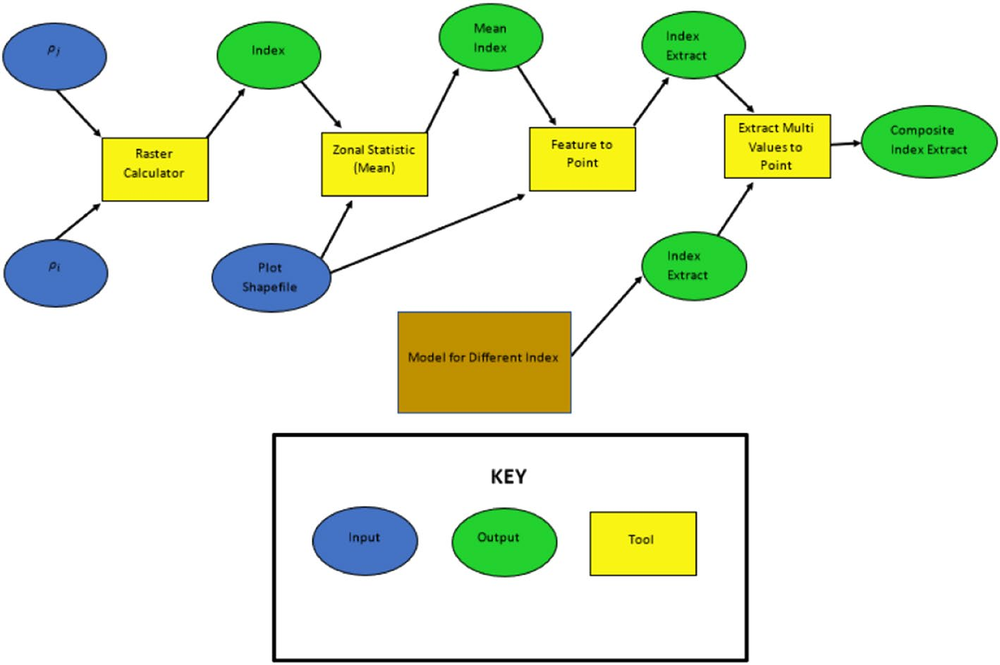
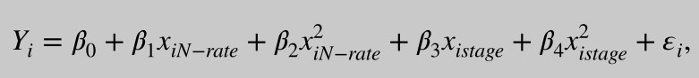
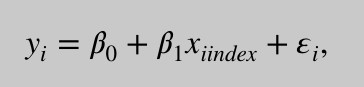
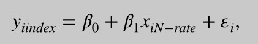
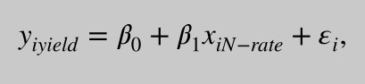

核心思想：想要得到某产量，用VI-yeild(植被指数-产量)线性回归方程得到不同时期的VI，将VI和相应的stage代入VI-(stage,N-rate)多元线性回归模型得到N-rate——>N-recommendations
背景：
N-rates： are established using two factors:maize grain yield goal and soil texture. 氮肥的比率，在阿肯色州247 是100%，它和土壤质地共同影响最后的产量。换句话说，你可以根据土壤质地和目标产量确定你应该施肥的N_rate
N-recommendations based on conventional systems may not be applicable under the agricultural practices of no- or minimal tillage, winter cover crops and/or diverse crop rotations.这篇论文是在荒地、冬季覆土作物和其他各种各样的轮作上研究 N-recommendation
研究变量
nitrogen fertilizer rates
maize grain yield
maize growth stage
vegetation indices
研究N-rate、玉米作物产量、玉米生长时期、植被指数四个变量的关系
(i) the strengths and weaknesses of vegetation indices in detecting nitrogen fertilizer treatments,
植被指数能不能很好地检测判断N-rate氮肥的施肥方式？
(ii) the effect of maize growth stage on the relationship between vegetation index and nitrogen treatment
不同的玉米生长时期对VI和N-rate的关系的影响
或：VI和N-rate的关系随着玉米生长时期的不同有何变化
(iii) the power of vegetation indices for predicting maize grain yield during vegetative and reproductive growth stages.
在vegetative和reproductive期间测定的植被指数，能多大程度上预测最终玉米产量。
选择的玉米生长时期是between the V6 (six true, collared leaves)and R4 (dough formation) growth stages
原因：其他阶段不怎么吸收N，中后期植被覆盖和叶子变多，降低了土壤影响。65% of total N-uptake occurs between V6 and vegetative tasseling (VT) Approximately 20% of maize nitrogen demand is satisfied between VT and R3 (milk-like liquid present in kernels)
| Vegetative growth stages | Reproductive growth stages | ||
|---|---|---|---|
| VE | emergence | R1 | silking |
| V1 | a first leaf | R2 | blister |
| V2 | second leaf | R3 | milk |
| V3 | third leaf | R4 | dough |
| V(n) | nth leaf | R5 | dent |
| VT | tasseling | R6 | physiological maturity |
Arcgis求每个plot的平均植被指数。

多元线性回归模型（VI-(stage,N-rate)）

is the index value, is the nitrogen rate and is the growth stage
简单线性回归：因为stage和VI有较大的相关性，所以下面只是分析VI和N-rate对yield的影响

is the maize grain yield and is the index value.
加大N-rate至产量不再变化，这个N-rate就是作物的饱和点，我们需要找到这个饱和点，如果VI和产量在同一N-rate处达到饱和，我们可以用这个VI的饱和点来确定作物的饱和点。

